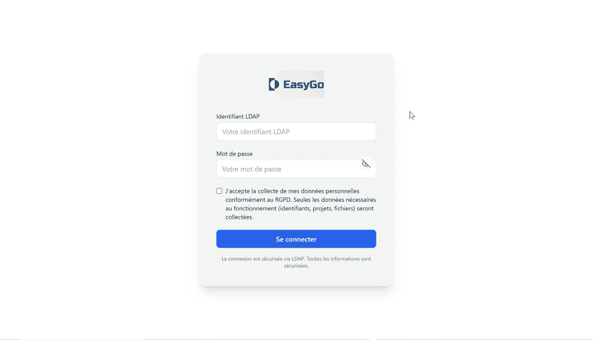

Projets Personnels
Voici quelques projets personnels que j'ai réalisés pour approfondir mes compétences en programmation et en développement logiciel. Chaque projet m'a permis de relever des défis techniques et de mettre en pratique les concepts appris durant mes études.
Développement full-stack d'une application web métier

EasyGo est une application web développée en équipe dans un cadre académique, avec une vraie logique
de projet logiciel de bout en bout. J’ai contribué à la connexion entre le front-end et le back-end,
à la gestion des données en base relationnelle, ainsi qu’à l’implémentation de fonctionnalités métier.
Cette expérience m’a permis de consolider ma pratique du développement full-stack :
structuration d’une interface moderne, communication avec une API, traitement des données côté serveur
et persistance fiable en base.
Stack technique : React, TypeScript, Tailwind CSS, Java, Spring Boot, JPA/Hibernate, Oracle
File System Management- Projet système en C(300H)
J’ai développé en C un mini-système de gestion de fichiers en ligne de commande, simulant les commandes Unix (`touch`, `mkdir`, `rm`, `rmdir`).
Stack technique : C (structures, allocation mémoire, appels système Unix).
Zombicide - Jeu en Java(500H)
J’ai codé en Java une version 2D du jeu Zombicide, où des survivants affrontent des zombies sur une grille. Ce projet m’a permis de structurer une logique de jeu complète en appliquant concrètement les principes de la POO (héritage, polymorphisme, interfaces).
Stack technique : Java (POO, logique de jeu, architecture modulaire).
FORMATION

Licence d'Informatique - Université de Lille
Période : Septembre 2023 - Juin 2026 (en cours)
Parcours axé sur l'algorithmique, les bases de données, les réseaux, ainsi que sur les différents paradigmes de programmation (orientée objet, fonctionnelle et impérative). Ce cursus m’a permis de développer une approche rigoureuse de la résolution de problèmes et d’approfondir mes compétences en développement logiciel.
Année de consolidation / transition
Période : Septembre 2022 - Juin 2023
Cette année m'a permis de poursuivre mon apprentissage de l'informatique en autonomie, de renforcer ma méthode de travail, et de me perfectionner dans des domaines fondamentaux tels que les algorithmes, la programmation, et les bases de données. Une étape personnelle essentielle avant d’intégrer pleinement la licence d’informatique.
🎓 Diplôme Universitaire - Tremplin Sciences et Technologies
Période : Septembre 2021 - Juin 2022
Établissement : Université de Lille
Formation préparatoire intensive aux études scientifiques, avec une spécialisation progressive en informatique. J’ai obtenu ce diplôme avec mention Bien en juin 2022, ce qui m’a permis d’intégrer la licence avec de solides bases académiques.
Stage d'observation – Laboratoire LaMcube (UMR 9013)
Période : Avril 2022 - Mai 2022
Lieu : Université de Lille - Laboratoire de Mécanique, Multiphysique, Multiéchelle (LaMcube)
Pendant ce stage d'initiation à la recherche, j'ai découvert la programmation scientifique avec Python en mettant en œuvre la méthode des moindres carrés pour ajuster une droite à un ensemble de données expérimentales. Encadré par un chercheur, j’ai appris à relier raisonnement mathématique et code, et à analyser les résultats avec rigueur.
Baccalauréat Scientifique
Période : Septembre 2020 - Juin 2021
Diplômé du baccalauréat scientifique avec mention Très Bien. Cette formation m’a permis d’acquérir des bases solides en mathématiques, physique-chimie et sciences de l’ingénieur, qui ont constitué un socle essentiel pour la suite de mes études en informatique.
Expérience Professionnelle
Développement d'un site web pour l'Entreprise Rex-Ingénierie (300H)
Ce projet m'a permis de monter en compétences en développement web moderne notamment sur
les frameworks React et Tailwind CSS.
Stack technique : React, Typescript,Vite,Tailwind CSS.
Développement complet d'un site web pour l'association APEH-France (450H)
J’ai conçu et développé de A à Z le site web de l’association APEH-France.
Ce projet m’a permis de mettre en œuvre mes compétences en développement web fullstack,
en sécurisation des données et en accessibilité.
Stack technique : HTML, CSS, PHP, PostgreSQL, JavaScript (validation côté client).